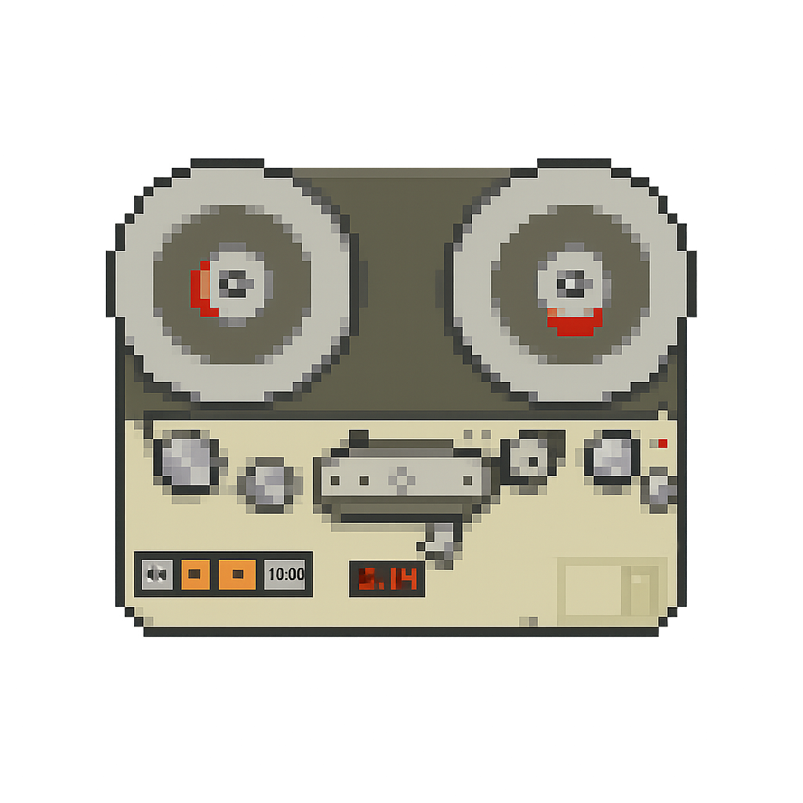
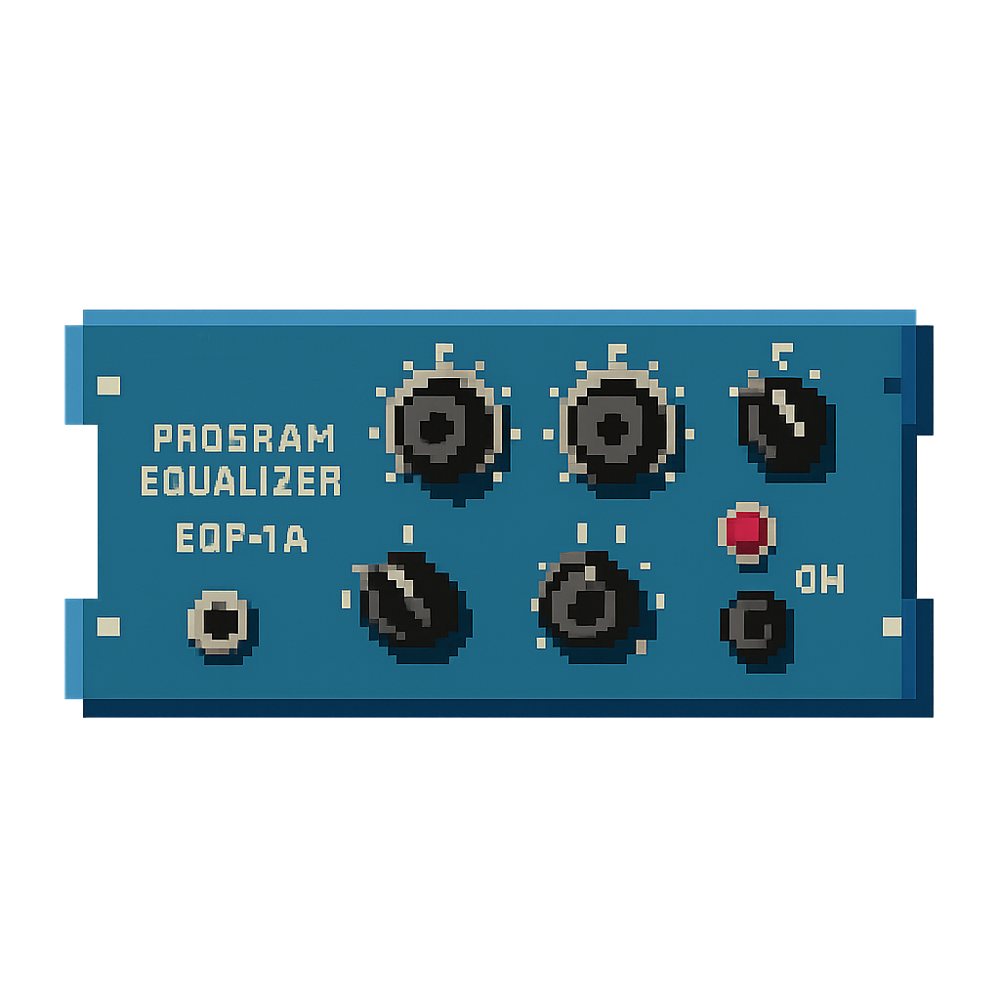
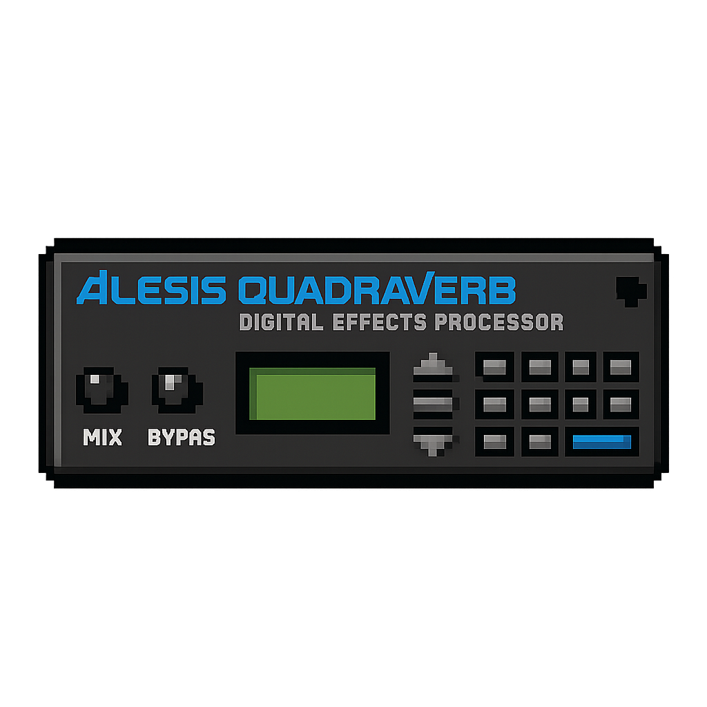
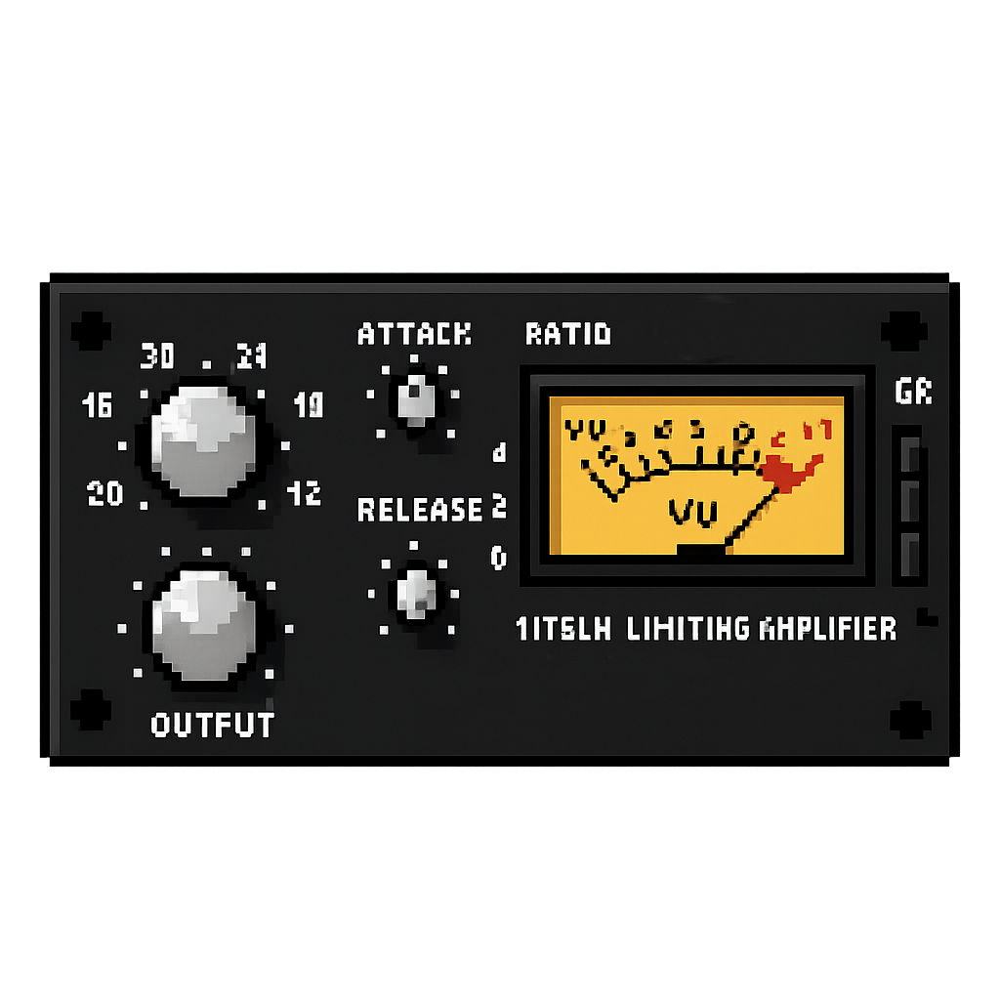

📁 Outboard and Recording
- Telefunken M15A master tape machine
- Apollo 8 Thunderbolt converters
- Audioscape Pultec EQP1
- Modded EELA Audio 12-channel summing desk
- Alesis Quadraverb
 Intellijel Rainmaker
Intellijel Rainmaker- ATLP 120x DJ setup with Omnitronic 222 mixer
- Zoom stereo recorder
- Shure SM7, t.bone SC500
- 1176-style compressor
📁 Software
- Live 12 Suite
- Pro Tools
- Reason 11
- Arturia V Collection X
- Arturia FX Collection 5
- FabFilter Pro Q, L, R, C
- Soundtheory Gullfoss
- iZotope Nectar, Neutron, Ozone 3, RX 8
- SIR Standard Clip
- Sonnox Oxford Inflator
- Waves C-Center, C6, RBass, S1 Imager
- UAD Signature Collection
- Melda Production Suite
- Spat Room Simulation
- Melodyne Vocal Correction
📁 Synths
- Nord Lead 2X
- Elektron Monomachine
- Elektron Octatrack MK2
- ARP 2600
📁 Instruments
- Fender Jazz Bass (Mexican)
- Squier Telecaster
- Random percussion (shakers, etc.)
📁 Monitoring
- ADAM Audio T5V
- Auralex treatment
- Sonarworks room calibration